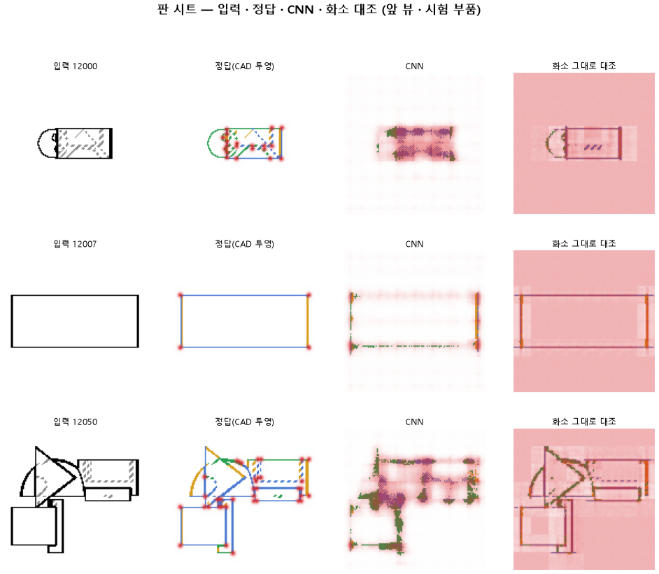

학습률을 열 배 올려 같은 에폭 안에 더 배우게 한다
실패판정 기준
명제 132 와 같은 설정 · 10 에폭에서 학습률만 3e-3 으로 올리면 헛선이 2 % 아래 · 곡선 · 직선이 0.90 · 꼭짓점 F1 이 0.75 를 넘고, 화소 그대로 대조보다 곡선 +0.15 · 꼭짓점 F1 +0.20 낫다
| 지표 | 조건 | 이 판 | 대조 | 결과 |
|---|---|---|---|---|
| 선_곡선 | >= 0.9 | 0.301 | 0.113 | |
| 선_직선 | >= 0.9 | 0.290 | 0.257 | |
| 선_헛선 | <= 0.02 | 0.047 | 0.023 | |
| 점_F1 | >= 0.75 | 0.307 | 0.291 | |
| 선_곡선_차 | >= 0.15 | -0.242 | -0.205 | |
| 점_F1_차 | >= 0.2 | 0.255 | 0.242 |
기준은 돌리기 전에 커밋됐다(하네스 관문이 확인). 대조는 같은 에폭.
숫자: 이 판과 대조
| 지표 | 이 판 | 대조 | 차 |
|---|---|---|---|
| 시험loss | 1.413 | ||
| 학습loss | 1.469 | ||
| 선_직선 | 0.290 | 0.257 | +0.033 |
| 선_곡선 | 0.301 | 0.113 | +0.189 |
| 선_곡면테 | 0.071 | 0.001 | +0.071 |
| 선_숨음 | 0.916 | ||
| 선_헛선 | 0.047 | 0.023 | +0.024 |
| 선_자리 | 0.730 | ||
| 선_자리헛선 | 0.095 | ||
| 선_종류 | 0.523 | ||
| 점_정밀 | 0.237 | ||
| 점_재현 | 0.435 | ||
| 점_F1 | 0.307 | 0.291 | +0.016 |
| 선_직선_화소 | 0.534 | ||
| 선_곡선_화소 | 0.544 | ||
| 선_곡면테_화소 | 0.231 | ||
| 선_숨음_화소 | 0.927 | ||
| 선_헛선_화소 | 0.013 | ||
| 선_자리_화소 | 0.897 | ||
| 선_자리헛선_화소 | 0.031 | ||
| 선_종류_화소 | 0.566 | ||
| 점_정밀_화소 | 0.027 | ||
| 점_재현_화소 | 0.689 | ||
| 점_F1_화소 | 0.052 | ||
| 선_곡선_차 | -0.242 | -0.205 | -0.038 |
| 선_직선_차 | -0.244 | ||
| 선_곡면테_차 | -0.159 | ||
| 점_F1_차 | 0.255 | 0.242 | +0.013 |
학습 곡선

점검
연기 판
첫 loss 5.198
배치 하나 40 걸음 뒤 2.026
VRAM 4.54 GB
층보기 (시험 64 부품 · 4 층)
칸끼리 닮음
빈 조각 주의 몫 (빈 조각 0.54)
주의 엔트로피
출력 자리 퍼짐 (정답 0.148)
탐침 (합성 그림)
블록 4 구조 6 종
블록 4 곡률 R²
블록 3 ·
쇼츠
편 94_판133학습률 · 54.2 초 · 13 줄 · 서재용 업로드 대기 · 하네스가 판 끝에 대본(claude -p) · 대본검사 · 맥락 없는 읽기 · 굽기까지
| 누구 | 말 |
|---|---|
| AI | 부품을 앞에서 본 도면이에요. 이걸 모델에 넣어요. |
| AI | 모델은 선마다 곧은 모서리인지, 둥근 모서리인지 골라 칠해요. |
| AI | 왼쪽 정답엔 둥근 모서리가 많은데, 오른쪽은 거의 비었어요. [둥근 데가 빔] |
| 나 | 곧은 모서리는 칠했는데, 둥근 데만 비었네. |
| AI | 학습이 끝나는 순간까지도 틀리는 게 계속 줄고 있었어요. |
| 나 | 배우는 속도가 느렸던 거야. 끝나기 전에 다 못 배운 거지. |
| 나 | 그럼 틀릴 때마다 한 번에 더 크게 고치게 바꿔. [한 번에 크게] |
| AI | 학습 시간은 그대로 두고, 한 번에 고치는 폭만 키웠어요. |
| AI | 둥근 모서리를 몇 개 중 몇 개 찾았나 셌어요. |
| AI | 100개 중 11개에서 30개로 늘었지만, 목표는 90개예요. [목표 한참 아래] |
| AI | 이번 오른쪽엔 정답에 없는 선도 처음보다 더 생겼어요. |
| 나 | 느리게 배워서 생긴 문제가 아니었네. |
| AI | 크게 고쳐도 둥근 모서리는 대부분 비어요. 실패예요. [이번 학습 실패] |
해석
아직 비어 있음. 보고.md 의 이 칸을 채우면 다시 만들 때 들어온다
다음 가지
아직 비어 있음. 보고.md 의 이 칸을 채우면 다시 만들 때 들어온다
재현
python 하네스/하네스.py --config-name 판_133학습률
설정.yaml · 판정.json · 보고.md · 산출 G:/art2real/out/하네스/133학습률/